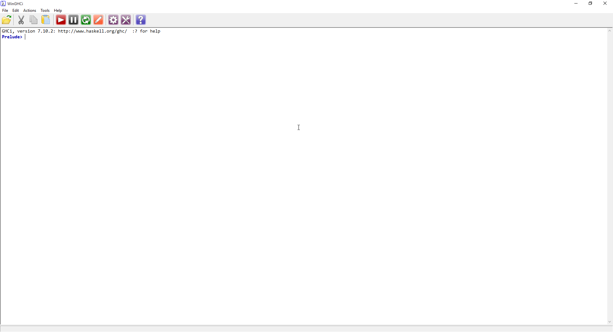
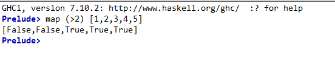
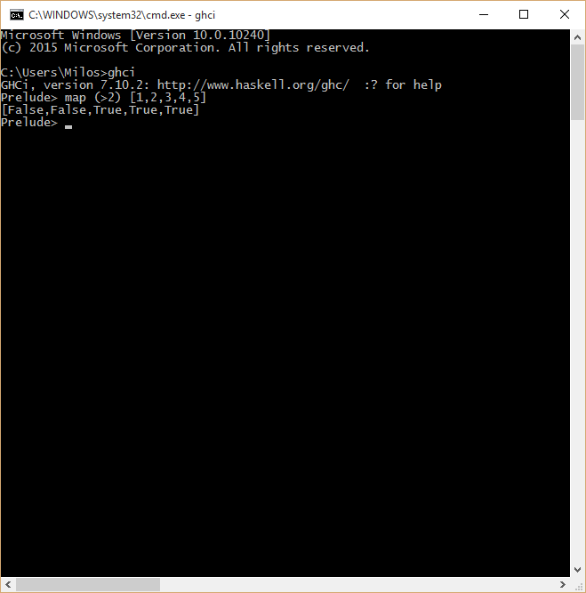
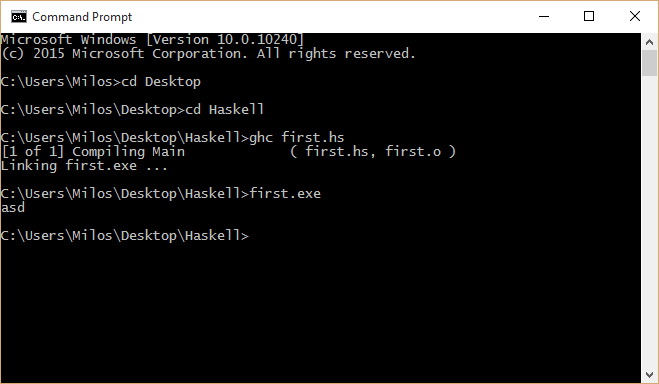

Interpreter i kompajler
Uvod
Haskell, kao viši programski jezik, ima jednu zanimljivu stavku kad je u pitanju način na koji se programi napisani u njemu izvršavaju. Naime, Haskell omogućava i kompajliranje i interpretaciju programa, tako da se može koristiti istovremeno i kao skripting jezik, kao i jezik opštije namene. Pored toga, u zavisnosti od implementacije kompajlera koja se koristi, moguće je i kreiranje Haskell bytecode-a.
Kompajleri i interpreteri
Aktuelna verzija programskog jezika Haskell je Haskell 2010, tako da ćemo se njom baviti u daljem radu. Postoje i druge verzije poput Haskell 1998.
Postoji nekoliko implementacija Haskell-a. Jedna od najpopularnijih je GHC ili Glasgow Haskell Compiler. Glavna prednost GHC-a je u tome što se putem njega aktivno razvija jezik, kao i mogućnost dodatne optimizacije koja se postiže njegovim korišćenjem. Jedan od kompajlera koji je takođe popularan, ali pruža i mogućnost kompilacije u bytecode jeste UHC ili Utrecht Haskell Compiler. Još jedan od zanimljivijih primera jeste i LHC, ili LLVM Haskell Compiler, koji koristi mogućnosti koje pruža LLVM platforma. Samim time što određene varijante BSD operativnih sistema koriste clang C kompajler, koji je deo LLVM platforme (ona izvršava bytecode generisan od strane LLVM kompajlera), moguće je (teoretski) koristiti Haskell za svrhu sistemskog programiranja na sistemima koji koriste LLVM kao platformu za kompilaciju.
U ostatku knjige se bavimo samo sa GHC kompajlerom i njegovom REPL (read, evaluate, print,
loop - skup koraka koji se koriste prilikom interaktivnih interpretatora jezika)
implementacijom za interpretiranje jezika: ghci (skraćeno od Glasgow Haskell Compiler
Interactive).
Instalacija
Najbrži i najbezbolniji način instalacije Haskell-a za Vaš operativni sistem je putem Haskell Platform instalacionog paketa. On se može preuzeti ovde i dostupan je za sve aktuelne platforme.
Sa njim dobijate GHC kompajler sa interpreterom, cabal upravljač paketa kojim se mogu instalirati
paketi kojima se proširuje funkcionalnost Haskell-a i 35 najkorišćenijih paketa (najčešće za rad sa
strukturama podataka i povezivanje sa sistemskim funkcijama).
Interpreter
U slučaju operativnog sistema Windows, nakon instalacije najlakši način za početak Haskell avantura jeste sa otvaranjem interpretera (isto je i za ostale platforme, ali ne garantujem da će iskustvo i doživljaj biti identičan).
Interpreter može da se pokrene na dva načina:
- Koristeći Command prompt i izvršavanjem komande
ghci - Pokretanjem programa WinGHCi
U toku daljeg rada ćemo koristiti WinGHCi, kao i tekstualni editor (nebitno koji).
Nakon pokretanja dočekaće nas sledeći prozor: 
Neophodno je obratiti pažnju na centralni, beli deo ekrana.
Prelude> predstavlja više stvari:
- Početna linija na kojoj se ispisuju komande
- Biblioteke koje su trenutno uvezene u kontekst programa; u ovom trenutku, to je samo
Prelude
Prelude predstavlja standardnu biblioteku, kao što je to System u slučaju programskog jezika C#
ili stdio.h u slučaju programskog jezika C.
Pritiskom na Enter se vrši evaluacija unetog izraza. Kao primer smo uneli izraz map (>2) [1,2,3,4,5]
koji se čita kao:
Napraviti novu listu istih dimenzija kao početna gde na odgovarajućem mestu se nalazi rešenje provere
elementa sa predikatom koji proverava da li je element veći od broja dva.

Kao i što je očekivano, dobili smo niz istih dimenzija kao početni gde se na svakoj poziciji, analogno
poziciji elementa u početnoj listi nalazi vrednost False, u slučaju da element nije veći od broja 2 ili
True, u slučaju da je element veći od broja dva :
[False,False,True,True,True]
Identično rešenje bi se dobili da smo koristili Command prompt:

Kompajler
Ako odlučimo da izvršimo kompilaciju našeg programa, potrebno je uraditi nekoliko stvari.
Pre svega, potrebno je definisati ulaznu tačku programa koja se u Haskell-u naziva
main monada i pripada IO() polimorfnom tipu. O monadama više u sledećem programu, tako da
za sada je dovoljno tretirati main kao običnu funkciju.
U ulaznoj tački se vrši pozivanje funkcija i njihova kompozicija, kao i preuzimanje ulaznih podataka sa konzole, a takođe i njihov ispit.
Kompilacija se vrši otvaranjem Command prompt-a, navigacijom do direktorijuma gde se nalazi
Haskell fajl sa main monadom (ne zaboravite da Haskell koristi ekstenziju .hs) i
pokretanjem komande ghc imeFajla.hs
Kao i uvek, najbolje je ilustrovati primerom i slikom, u ovom slučaju kompilacijom i izvršavanjem programa koji ispisuje string "asd" na ekran :

Zaključak
Cilj ovog poglavlja je da pruži malo detaljniji tehnički aspekt programskog jezika Haskell. Pored toga, namena je i da osposobi korisnika da rukuje alatom kako bi mogao da koristi interpreter za testiranja koda, kao i način da prilagodi kod koji je bio interpretiran u oblik na osnovu koga bi se kod kompajlirao.